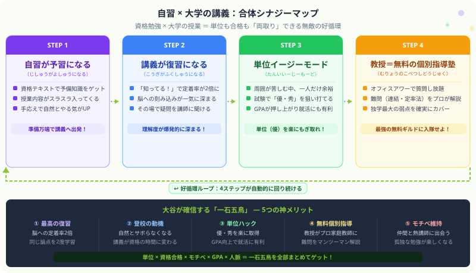

著者・大谷からひとこと
こんにちは、大谷です！
大学の履修登録のとき、先輩から「簿記の講義は計算が多くて単位落とすからやめとけ」って脅されませんでしたか？（笑）。
でも、もしあなたが今、独学やアプリで簿記・会計の勉強をしているなら、その類似講義を履修するのは【メリットしか存在しない神ボーナスステージ】です！
僕自身、大学の講義と自分の資格勉強をリンクさせたことで、「うわっ、なんじゃこりゃ……大学の授業がめちゃくちゃスラスラ理解できるし、モチベが勝手に湧いてくる！」という最高の好循環を体験しました。
今回は、大学の単位をイージーにハックしつつ、資格合格も加速させる「一石五鳥の裏ワザ」を優しく教えます！
また、モチベ維持のために、末尾のほうにある【いいねボタン】もポチッと押してもらえると、めちゃくちゃ嬉しいです！
まず全体像をつかみましょう。下の図は「自習（資格勉強）」と「大学の講義」が合体したときに起きる好循環の全体構造を図解したものです。ポイントは、4ステップが一方通行ではなくループするという点です。

資格テキストで一度やった論点を、大学の講義でもう一度聞くことになります。これは「勉強した記憶が新鮮なうちに行う最高のタイミングの復習」そのものです。
記憶の定着率を研究した「エビングハウスの忘却曲線」によれば、学習直後の復習は最も記憶保持効果が高いとされています。しかも、自分で問題を解く演習とは「別角度の刺激」として脳に入るため、一粒で二度おいしい状態が生まれます。
簿記2級の工業簿記で「総合原価計算」を自習したとき、仕掛品の計算がどうしても混乱していました。でも翌週の原価計算論の授業で同じ内容が出てきて、教授が別角度で図解してくれた瞬間に「あ、こういうことか！」とパチッとはまりました。
自習で作った「うっすらとした理解」が、講義という別の刺激でカチッと固定される感覚——これが「定着率2倍」の正体だと思います。
「ただ出席点を取るために行く講義」と「自分の資格勉強のための時間になる講義」では、大学へ行くモチベーションがまったく違います。
自習している資格テキストと連動した講義は、「今日の授業に行けば、今やっている資格の論点を教授が説明してくれる」という、明確な動機が生まれます。二度寝しようと思っていた朝でも「あの論点、今週の講義で出るかも」と思ったら体が動きます（笑）。
会計・簿記系の講義は、周囲の学生にとっては「難しくて単位を落としやすい」と言われることがあります。でもそれは、初見で試験に臨んでいるからです。
資格テキストで基礎を固めてから講義に出ているあなたにとって、試験範囲の大半は「すでに知っている内容の確認」です。他の学生が「貸倒引当金って何？」「仕訳の意味がわからない」と混乱する中、あなたはすでに50〜60点分の知識をベースに持っています。
独学の最大の弱点は「詰まったとき、誰にも聞けない」ことです。参考書を読んでも解決しない論点、問題集の解説だけではしっくりこない箇所——どうしても出てきます。
でも大学生のあなたには、無料で質問できるプロの専門家がいます。それが教授です。多くの大学で「オフィスアワー（おふぃすあわー）」（教授が研究室で質問を受け付ける時間）が設定されています。
資格予備校の個別指導は1時間あたり数千円〜数万円かかります。でも大学のオフィスアワーは授業料に含まれている、つまり実質0円です。
しかも、会計学・財務論の教授は公認会計士や税理士の資格を持つ実務経験者であることも多いです。連結会計（れんけつかいけい）の内部取引消去、定率法（ていりつほう）の償却計算、財務分析の複合問題など、独学で詰まりがちな難問を、プロが1対1で解説してくれます。
大谷は実際にオフィスアワーで連結会計の質問をして、1時間みっちり解説してもらいました。あの密度の学習を予備校でやったら、3万円は払っていたと思います。教授を「無料の個別指導塾のギルドマスター」にするのが、賢い冒険者のやり方です！
シラバスや大学公式サイトに載っています。見つからなければ講義後に「オフィスアワーはいつですか？」と直接聞くだけでOK。
「テキストの〇ページの〇の計算が分からない」と具体的にまとめておくと教授も答えやすく、時間を有効に使えます。
「簿記2級の勉強をしていて、連結会計の内部取引消去がどうしても理解できないのですが…」と文脈を合わせると、教授も的確な解説をしてくれます。熱心な学生として好印象にもなります。
せっかくの解説も書き留めなければすぐ忘れます。話しながらメモし、帰ったら自習ノートに清書する習慣をつけると効果が何倍にもなります。
孤独な自習の最大の敵は「やる気が続かない」ことです。机に向かっても気持ちが乗らない日、テキストを開いても何も入ってこない日——誰にでも必ず来ます。
でも、大学の講義と連動させると大きな変化が起きます。それは「会計に興味がある仲間」や「熱い教授」との出会いです。同じ講義に出ている仲間の中には、あなたと同じように資格を目指している人がいるかもしれません。
情報共有・勉強会・進捗確認——こういったつながりが生まれると、孤独なソロプレイが「仲間のいるパーティープレイ」に変わります。モチベーションの継続力が、ぐっと変わります。
簿記・会計以外でも、大学の講義と資格の連動は有効です。シラバスと資格テキストの目次を見比べると一目瞭然です。
| 大学の講義 | 連動できる資格 | シナジーポイント |
|---|---|---|
| 簿記・会計学超おすすめ | 日商簿記3級・2級 | 論点がほぼ一致。自習がそのまま予習になる |
| 管理会計・原価計算超おすすめ | 日商簿記2級（工業簿記） | シュラッター図・総合原価計算を二重習得できる |
| 財務諸表論・会計基準 | 公認会計士・日商簿記1級 | 会計基準の理論問題対策に直結する |
| 民法・商法・会社法 | 行政書士・司法書士・宅建 | 意思表示・代理・物権など基本論点が重なる |
| ファイナンス論・金融論 | FP2級・証券外務員 | 時間価値の計算・リスク管理が共通テーマ |
| 企業論・経営戦略 | 中小企業診断士 | SWOT分析・経営戦略フレームワークが共通 |
連動できる箇所を事前に把握しておくと、履修選択の段階から最大のシナジーを設計できます。
資格テキストで予習済みの状態で出席することで、講師の説明が「確認」として深く刻まれます。
試験範囲の基礎は資格テキストで固まっています。試験固有の形式だけ押さえれば「優」「秀」が狙えます。
詰まった論点は一人で抱え込まず教授の研究室へ。無料の個別指導を最大限に活かしましょう。
スタディクエストの STUDY GUIDE には、簿記・会計・資格全般の学習を網羅した全117記事が揃っています。今日の勉強を記録するアプリと合わせて、合格への最短ルートをナビゲートします。
STUDY GUIDE を見る（無料）この記事が「役に立った！」と思ったら...
下のほうにある 【いいねボタン】 をポチッと押してください！